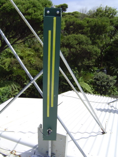

Note:
The final product only needs to be accurate to about 1mm as this will only shift the frequency within the range of the 802.11 spectrum. A smaller slot length will shift the frequency response of that slot to a higher channel. A longer slot length will shift it down. Changes in the slot spacing affects the vertical signal pattern. A smaller spacing (higher channel) results in the lower channels having a slightly downward vertical pattern. A larger spacing (A lower channel) will result in higher channels having a slightly upward tilted vertical pattern. Slot width variation affect the frequency response. The distance of each slot from the center varies with design. I don't know what this affects. One design deliberately changes this distance for each slot so as to reduce the side lobes of the vertical radiation pattern.
|  | A view from the Front. |
For a step by step pictorial guide, follow me. The same contruction technique is common to both the single and double sided wave guide antenna.
{kind=link}